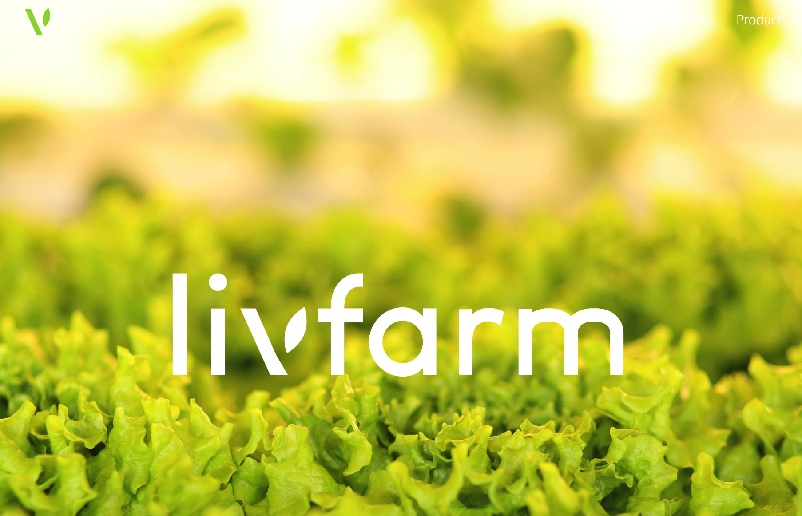

- livfarm Bangbae
- livfarm Gyodae
- Plant Segok
왜 우리는 도심과 멀리 떨어진 곳에서 생산되어 긴 유통망을 거쳐온 신선도가 낮은 채소를 소비해야 할까요?
더 신선하고 맛있고 깨끗한 채소를 합리적으로 섭취할 수 없을까요? 왜 우리는 획일화된 양상추로만 만들어진 샐러드만 먹고 있을까요? 더 맛있고 다양한 채소로 만든 샐러드를 먹고 싶은데 말이죠.
살아있는 신선작물을 30 분 이내에 고객에게 전달하기 위해서는 기존의 유통방식으로는 구현이 불가능합니다. 농산물을 생산하고, 중간판매자들을 거쳐오며 고객에게 전달되기까지 현재 가장 빠른 솔루션이 하루가 소요됩니다. 이러한 긴 유통 과정에서 수요와 공급의 불일치, 물리적 거리로 인해 31%의 음식이 폐기되고 있으며, 맛과 신선함이 떨어지고, 영양적 가치도 결여 되고 있습니다.
다양한 채소를 가장 신선하고 맛있게, 살아있는 그대로 먹기 위해서는 공급망의 혁신이 필요합니다. written by ChatGPT
